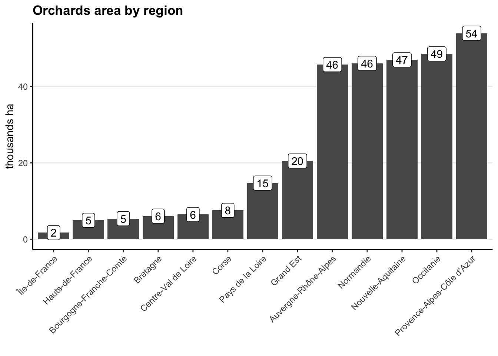

The TOPO database reports information on the French territory and its infrastructures. You can download it on the géoportail website here, all documentation is available here and the description on this document.
We use this database to complete the agricultural area not reported in the RPG database, namely vineyards and orchards. As the complete database is very large (100s GB), we only kept information related to these 2 items in the dowloaded regional shapefiles, stored in OCCUPATION_DU_SOL -> ZONE_DE_VEGETATION.
Vineyards and Orchards data of the TOPO database are described on p177 of the description document.
Orchards (verger): those with an area < 5000 m2 (0.5 ha) are not systematically reported.
Vineyards (vigne): those with an area < 2000 m2 (0.2 ha) are not systematically reported. Data come from multiple databases: RPG, CVI, orthophotographs…
Code
knitr::opts_chunk$set(message=F, warning=F, results=F, fig.align ="center", dev='png')# Load the function file common to all pagessource("functions.R")#included:#-function to save csv f_save_csv_files#-set the default scale_color and scale_fill to viridis theme#-loads the core tidyverse package# Load additional packageslibrary(sf) # to handle geographical shapefileslibrary(data.table) # for efficient handling of large datalibrary(arrow) # to write and read compressed parquet filelibrary(cowplot) #for plot_grid multiple ploslibrary(patchwork) #for multiple plots#set theme for graphstheme_set(theme_classic() +theme(panel.grid.major.y =element_line(), #no vertical lines by default#text = element_text(family = "Times New Roman"), #default fontplot.title =element_text(face="bold"), #graphs titles in bolds ) )CRS_RGF93_Lambert93 <-2154# number of coordinate projection system used for France (Réseau Géodésique Français 1993 - Lambert 93)
Even once we only kept the OCCUPATION_DU_SOL -> ZONE_DE_VEGETATION regional files, the remaining data is heavy (24 GB) and long to read. For faster computing, we already ran the deactivated pre-processing code below, to produce in our source directory a much more compressed (13 MB) and faster to read .parquet file.
For full reproducibility, you can activate the code below by un-commenting it, unzip BD_TOPO_data.zip (5-6 GB) in our BD_TOPO_data folder in the source folder, and run the full code.
This code below
extracts the vineyards and orchards parcels for each French metropolitan regions
computes each parcel area based on its polygon data
removes the polygon data and only keeps its centroid coordinate, to save memory
binds all regions together
saves the binded data as a pre-processed file
If you do not do these steps, the script will go straight to the next tab data preparation, where it loads the pre-processed file.
Code
# # List of regions ID# regions_numbers <- c(# "11", "24", "27", "28", "32", "44", "52", "53", "75", "76", "84", "93", "94"# )# # # Function to process each region: filters only orchards and vineyards data# process_region <- function(region) {# # message displaying the processed region# cat("Processing region:", region, "\n \n")# # # Construct the shapefile path# shapefile_path <-# paste0(# "source/BD_TOPO_data/BD_TOPO_data/BDTOPO_3-3_TOUSTHEMES_SHP_LAMB93_R",# region,# "_2023-09-15/BDTOPO/1_DONNEES_LIVRAISON_2023-09-00223/BDT_3-3_SHP_LAMB93_R",# region, "-ED2023-09-15/OCCUPATION_DU_SOL/ZONE_DE_VEGETATION.shp"# )# # # Read the shapefile# sf_object <- st_read(# shapefile_path,# #read only data about orchards (verger) and vineyards (vigne)# query = "select ID, NATURE from ZONE_DE_VEGETATION where NATURE in ('Verger', 'Vigne')"# )# # # Convert to data.table to be faster# setDT(sf_object)# # # Compute new columns: area in ha, region code# sf_object[, c("parcel_area_ha", "code_region_parcel") := .(# as.numeric(st_area(geometry) / 10000), # agricultural plots area, converted from m2 to ha# as.integer(region) # add region number# )]# # # print spaces before next region# cat("\n \n \n")# # return(sf_object)# }# # # Use lapply to process each region# filtered_sf_list <- lapply(regions_numbers, process_region)# # # Merge all filtered sf objects into one, remove temporary lists# merged_sf_object <- rbindlist(filtered_sf_list)# rm(filtered_sf_list, regions_numbers, process_region)# # # Compute coordinates of each polygon plot# merged_sf_object[, centroid_coords := st_centroid(geometry)]# # # Drop heavy polygon geometry column# merged_sf_object <- merged_sf_object[, !"geometry", with = FALSE]# # # removes geometry centroid_coords column and transforms into 2 columns, to store in parquet file# # latitude and longitude (in projected Coordinate Reference System: RGF93 v1 / Lambert-93)# merged_sf_object$lat_RGF93_LAMB_93_parcel <- st_coordinates(merged_sf_object$centroid)[, "Y"]# merged_sf_object$lon_RGF93_LAMB_93_parcel <- st_coordinates(merged_sf_object$centroid)[, "X"]# merged_sf_object <- merged_sf_object[, !"centroid_coords", with = FALSE]# # # saves pre-processed file in parquet format# arrow::write_parquet(merged_sf_object, "source/BD_TOPO_data/preprocessed_TOPO_vineyards_orchards.parquet")# # rm(merged_sf_object)
Load the pre-processed data.
Code
#read pre-processed parquet fileTOPO_vineyards_orchards <- arrow::read_parquet("source/BD_TOPO_data/preprocessed_TOPO_vineyards_orchards.parquet")# to sf class for geographical join by intersection, to attribute each plot to an old regionTOPO_vineyards_orchards <-st_as_sf(TOPO_vineyards_orchards, coords =c("lon_RGF93_LAMB_93_parcel", "lat_RGF93_LAMB_93_parcel"), crs = CRS_RGF93_Lambert93)
Attribute an old region to each vineyards and orchards plots.
Code
# load old regions geographical data (used to link each plot to region fertilization practices)sf_old_regions <-st_read("source/maps/old_regions/regions-20140306-5m.shp", options ="ENCODING=WINDOWS-1252"#encoding to read special French characters ) sf_old_regions <- sf_old_regions %>%#select only columns of interest, rename in Englishselect(code_old_region_parcel = code_insee,name_old_region_parcel = nom ) %>%#load only metropolitan areas, remove overseas territoriesfilter(!(name_old_region_parcel %in%c("Guadeloupe", "Martinique", "Guyane", "La Réunion", "Mayotte")) ) %>%# transform into our coordinate system (French RGF93-Lambert 93)st_transform(CRS_RGF93_Lambert93) #add old regions by geographical joinTOPO_vineyards_orchards <-st_join(TOPO_vineyards_orchards, sf_old_regions, join = st_intersects)rm(sf_old_regions)
Create 2 different vineyards and orchards files and add current regions names, based on reported regions code.
Code
# load regions keys ID and namesregion_names <-read_csv("source/regions_data/regions_keys.csv") %>%select(code_region_parcel = code_region, name_region_parcel = name_region) %>%distinct()#create vineyards file, adds regions names based on code_region_parcel in TOPOvineyards <- TOPO_vineyards_orchards %>%filter(NATURE =="Vigne") %>%left_join(region_names, by="code_region_parcel")#create orchards file, adds regions names based on code_region_parcel in TOPOorchards <- TOPO_vineyards_orchards %>%filter(NATURE =="Verger") %>%left_join(region_names, by="code_region_parcel")#compute national area of vineyards and orchards (in Mha)area_vineyards <-round(sum(vineyards$parcel_area_ha)/10^6, 2)area_orchards <-round(sum(orchards$parcel_area_ha)/10^6, 2)#remove temporary filesrm(TOPO_vineyards_orchards, region_names)
Maps
Code
#create background France map#load map regionssf_regions <- sf::st_read("source/maps/all_French_admin_units/ADMIN-EXPRESS-COG_2-1__SHP__FRA_2020-11-20/ADMIN-EXPRESS-COG/1_DONNEES_LIVRAISON_2020-11-20/ADE-COG_2-1_SHP_LAMB93_FR/REGION.shp")#create whole francce polygon from regions polygon unionsf_france <-st_union(sf_regions)rm(sf_regions)# resolution of raster pixelsresolution_meters <-2000km2_resolution <- (resolution_meters/10^3)^2ha_resolution <- km2_resolution*100#breaks of ha per km2 legendvec_ha_km2_breaks <-c(0, 1, 10, 30, 1000)#labels of ha per km2 legendvec_ha_km2_labels <-c("< 1 %", "1 - 10 %", "10 - 30 %", "> 30 %")
Code
#produces distribution graphs, annotated, to check if the 10 km2 resolution used is legitf_graph_distribution <-function(dataset, variable, x_intercept, y_annotation, annotation_label, fill_color){ gg <-ggplot(dataset) +geom_histogram(aes({{ variable }}, fill=""),alpha=.7, bins =100, ) +scale_fill_manual(values = fill_color) +scale_x_log10(limits=c(0.001, 1000),breaks =c(0.01, 0.1, 1, 10, 100, 1000, 10000),labels =c(0.01, 0.1, 1, 10, 100, 1000, 10000) ) +geom_vline(xintercept = x_intercept,linetype="dashed" ) +theme(legend.position ="none") +labs(y="") +annotate(x=x_intercept, y=y_annotation, geom="text", label=annotation_label, hjust=1 )return(gg)}
#prepare vineyards file for map pipelinetemp <- vineyards %>%mutate(Nmin =0, Pmin =0, Kmin =0, Norg =0) %>%#must add empty values for function f_categorize_densities select(geometry, parcel_area_ha, Nmin, Pmin, Kmin, Norg) #select only variable of interest for rasterization#prepare vineyards raster with adequate resolutionraster_density <-f_prepare_raster( temp, parcel_area_ha, Nmin, Pmin, Kmin, Norg, resolution_meters, sf_france )#add area categoriesraster_density <-f_categorize_densities( raster_density, "ha_per_km2", vec_ha_km2_breaks, vec_ha_km2_labels)#plot map of vineyards density in Francegg_vineyards <-f_grap_map_raster( raster_density, category, "% area\noccupied by\nvineyards", resolution_meters, sf_france, "#696969" ) +labs(title ="Vineyards in France")gg_vineyards
I use a resolution of 10 km2, or 1 000 ha. As I rasterize the data based on the centroids of the agricultural plot, this could be an issue if these plots were larger than 1 000 ha, resulting in pixels reporting agricultural area superior to its own area. Fortunately, virtually all the agricultural plots reported in the TOPO data base are < 1 000 ha (left pane), and there is virtually no pixel reporting an inconsistent value > 100 ha/km2.
Code
#plot the 2 distribution graphsplot_grid(f_graph_distribution( vineyards, parcel_area_ha, resolution_meters^2/10^4, #1 ha = 10 000 m28000, "pixels \nresolution: \n10 km2 = \n1 000 ha ", "#440154" ) +labs(x="agricultural plots area (ha)"),f_graph_distribution( raster_density, ha_per_km2, 100,300, "1 km2 = \n100 ha ", "#5ec962" ) +labs(x="ha per km2\n(cannot be superior to 100)"),align ="hv")
#prepare vineyards file for map pipelinetemp <- orchards %>%mutate(Nmin =0, Pmin =0, Kmin =0, Norg =0) %>%#must add empty values for function f_categorize_densities select(geometry, parcel_area_ha, Nmin, Pmin, Kmin, Norg) #select only variable of interest for rasterization#prepare orchards raster with adequate resolutionraster_density <-f_prepare_raster( temp, parcel_area_ha, Nmin, Pmin, Kmin, Norg, resolution_meters, sf_france )#add area categoriesraster_density <-f_categorize_densities( raster_density, "ha_per_km2", vec_ha_km2_breaks, vec_ha_km2_labels)#plot map of orchards density in Francegg_orchards <-f_grap_map_raster( raster_density, category, "% area\noccupied by\norchards", resolution_meters, sf_france, "#696969" ) +labs(title ="Orchards in France")gg_orchards
I use a resolution of 10 km2, or 1 000 ha. As I rasterize the data based on the centroids of the agricultural plot, this could be an issue if these plots were larger than 1 000 ha, resulting in pixels reporting agricultural area superior to its own area. Fortunately, virtually all the agricultural plots reported in the TOPO data base are < 1 000 ha (left pane), and there is virtually no pixel reporting an inconsistent value > 100 ha/km2.
Code
#plot the 2 distribution graphsplot_grid(f_graph_distribution( orchards, parcel_area_ha, resolution_meters^2/10^4, #1 ha = 10 000 m28000, "pixels \nresolution: \n10 km2 = \n1 000 ha ", "#440154" ) +labs(x="agricultural plots area (ha)"),f_graph_distribution( raster_density, ha_per_km2, 100,600, "1 km2 = \n100 ha ", "#5ec962" ) +labs(x="ha per km2\n(cannot be superior to 100)"),align ="hv")
f_graph_area_regions(orchards, name_region_parcel) +labs(title ="Orchards area by region")

Code
f_graph_area_regions(orchards, name_old_region_parcel) +labs(title ="Orchards area by (old) region")
Save data
We prepare the data in a standardized format to be saved
Code
#function to save data in csv formatf_prepare_data_to_save <-function(dataset, label, fertilization_label){#to save in column format, adds latitude and longitude columns dataset$lat_RGF93_LAMB_93_parcel <-st_coordinates(dataset$geometry)[, "Y"] dataset$lon_RGF93_LAMB_93_parcel <-st_coordinates(dataset$geometry)[, "X"] dataset <- dataset %>%#remove centroïd coordinates columnst_drop_geometry() %>%#remove NATURE column which just specifies whether orchards or vineyardselect(-NATURE) %>%#change ID name to explicitely say it comes from TOPO databaserename(ID_TOPO_parcel = ID) %>%#add English label and fertilization for fertilization keymutate(our_label = label,crop_fertilization_label = fertilization_label )return(dataset)}vineyards <-f_prepare_data_to_save(vineyards, "Vineyards", "Vignes")orchards <-f_prepare_data_to_save(orchards, "Orchards", "Vergers")# artificially add a code crop in TOPO database coherent with RPG nomenclatureorchards$CODE_CULTURE <-"VRG"# added VRG code corresponds to "Verger" i.e. orchardsvineyards$CODE_CULTURE <-"VRC"# added VRC code corresponds to "Vigne" i.e. vineyards
For vineyards, we add a fertilization value for each plot, based on mean fertilization by old regions. For orchards we cannot do it DECRIRE OU ON VA LE FAIRE
Code
#load vineyards fertilizationfertilization_vineyards <-read_csv("output/fertilization/fertilization_surveys/fertilization_vineyards_by_old_region.csv") fertilization_vineyards <- fertilization_vineyards %>%select( crop_fertilization_label, name_old_region_parcel = name_old_region, `N mineral mean fertilization (kgN/ha)`,`P mineral mean fertilization (kgP/ha)`,`K mineral mean fertilization (kgK/ha)`,`N organic mean fertilization (kgN/ha)` )setDT(fertilization_vineyards)setDT(vineyards)#add the fertilization by ha, based on the old regions in fertilization_vineyardsvineyards[fertilization_vineyards, c("N mineral mean fertilization (kgN/ha)", "P mineral mean fertilization (kgP/ha)", "K mineral mean fertilization (kgK/ha)","N organic mean fertilization (kgN/ha)" ) := .(`N mineral mean fertilization (kgN/ha)`, `P mineral mean fertilization (kgP/ha)`, `K mineral mean fertilization (kgK/ha)`,`N organic mean fertilization (kgN/ha)` ), on =c("crop_fertilization_label", "name_old_region_parcel") ]#compute fertilization on each plotvineyards[, c("N mineral fertilization (kgN)", "P mineral fertilization (kgP)", "K mineral fertilization (kgK)","N organic fertilization (kgN)" ) := .(`N mineral mean fertilization (kgN/ha)`* parcel_area_ha,`P mineral mean fertilization (kgP/ha)`* parcel_area_ha,`K mineral mean fertilization (kgK/ha)`* parcel_area_ha,`N organic mean fertilization (kgN/ha)`* parcel_area_ha ) ]